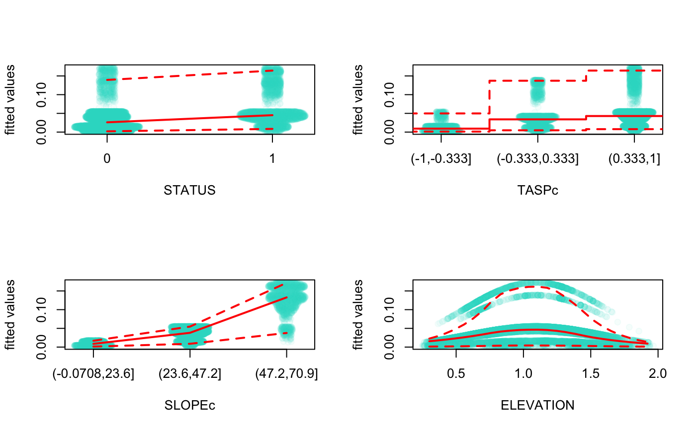

mep.RdScatterplot of marginal effects based on fitted model objects.
mep(object, ...) # S3 method for default mep(object, which=NULL, link=NULL, level=0.95, unique=10, n=25, minbucket=5, digits=4, col.points, col.lines=c(2, 2), pch=19, lty=c(1, 2), lwd=c(2,2), ask, subset=NULL, ylab, ...)
| object | a fitted model object. |
|---|---|
| which | numeric, logical, or character. Indices for the variables in the model frame if only one or a subset is desired. |
| link | character accepted by |
| level | numeric [0, 1], the confidence level required. |
| unique, digits | numeric, the number of unique points above which bins are used.
If the number of unique values is less than or equal to this number,
unique values are used without binning. Unique values are subject to
rounding to |
| n, minbucket | number of bins ( |
| col.points, pch | color and type of points to be plotted. |
| col.lines, lty, lwd | color, type, and width of quantile lines to be plotted. The 1st value correspond to the median, the 2nd value to the upper and lower quantiles, respectively. |
| ask | logical. If |
| subset | an optional vector specifying a subset of the data to be used for plotting. |
| ylab | character or expression, optional y axis label. |
| ... | other possible arguments passed to graphical functions. |
The input object must have a fitted and model.frame
method, and possibly a well identifiable family/link component
(family(object)$link).
In the absence of family/link information, the range of the fitted
value will be used to guess the scaling (identity, log, or logit)
unless directly supplied via the link argument.
Fitted values (f(x) = f(x_1,...,x_i,...,x_p); i = 1,...,p) are plotted against x_i.
The visual display is determined by the type of x_i (un-ordered factor, ordered
factor, unique numeric values, binned numeric values).
For each unique vale or bin, the median and confidence intervals
(quantiles corresponding to level) of f(x) are calculated.
Binned values are smoothed by lowess unless n < 3.
Jitter is added to factor and unique value types.
Jitter is calculated based on kernel density.
The model frame includes the response variable as well. Plotting f(x) as a function of the observations might be a useful visualization too to indicate goodness of fit or the lack of it.
The produces one or several marginal plots as a side effect. Returns a list of quantiles of fitted values corresponding to binned/unique values of variables in the input object.
Avgar, T., Lele, S. R., Keim, J. L. & Boyce, M. S. (2017) Relative Selection Strength: Quantifying effect size in habitat- and step-selection inference. Ecology and Evolution 7, 5322--5330.
kdepairs for 2D kernel density estimates and contours.
fitted for fitted values and
model.frame for model frames.
data(goats) goats$ELEVATION <- goats$ELEVATION/1000 goats$TASPc <- cut(goats$TASP, 3, ordered_result=FALSE) goats$SLOPEc <- cut(goats$SLOPE, 3, ordered_result=TRUE) fit <- rspf(STATUS ~ TASPc + SLOPEc + ELEVATION + I(ELEVATION^2), goats, m=0, B=0) op <- par(mfrow=c(2,2)) mep(fit, which=1:4)#, subset=sample.int(nrow(goats), 10^4))par(op)